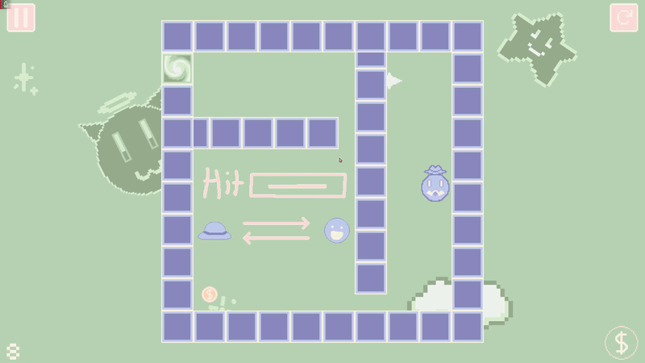
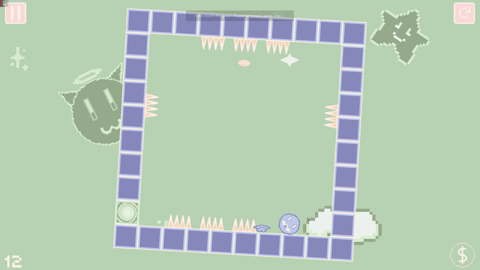
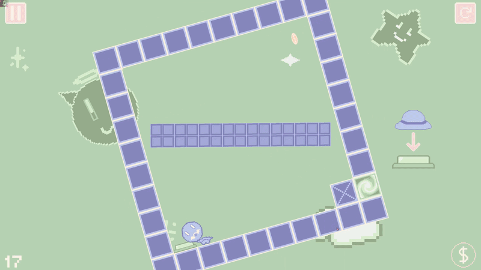

SLORL
SLORL, an anagram of ROLLS. Roll through twenty progressively more difficult levels and get to the portals at the end. For an extra challenge, grab all the coins in each level. With your trusty hat along for the ride, anything is possible!
- Mechanic Design
- Level Design
- Art Design
- UI/UX
- API & SDK Integration
Key Mechanics
-

Player & Hat Teleportation: Swaps positions the player and the hat. -

Hat Ramp: Using the hat as a ramp, the impossible becomes possible. -

Buttons: Buttons can toggle walls, or it can spin them.
Design breakdownKey Decisions, Challenges, Outcomes
Key decisions
-
Goal:
- My plan for this game was to release it on web platforms like CoolMathGames and Armor Games. Art style:
- Chose a simple 2D pixel art reminicent of old flash games. It would also fit in with other games on these platforms.
- Based all sprites off of three pastel color palettes, green → cream, pink → orange, and blue → cream.
- Enabled for easy sprite creation and simple animations. Level Design:
- Every level is built off the same scene base.
- Makes it easy to create and iterate on different level flows and puzzles.
- The formula was to slowly introduce mechanics and combine these mechanics into progressively more difficult levels.
Challenges
-
Level Design Difficulties:
Teaching Mechanics
- To cater to the intended playerbase (usually a younger demographic) I wanted to make game mechanics easy to learn and understand.
- To do this I ended up putting visuals in the background of certain "tutorial" levels. This is something I would change!
- Shoehorning visuals into the background of the levels is the least elegant method of teaching mechanics to the user.
- If I were to make another puzzle platformer, I think I would make levels specifically to teach mechanics.
- The distinction would be that rather than rather than building around a mechanic that is taught with visuals, I would build a level that guides the player towards discovering the mechanic themselves. Compelling Levels
- It's really very hard to make stages that are difficult, fun, but also mechanic dense.
- The formula was to slowly introduce mechanics and combine these mechanics into progressively more difficult levels. This is something I would change!
- With my current formula, I essentially made three or four levels in a row that depended on a specific mechanic. This led to some levels feeling one dimensional.
- While this worked for a short game like SLORL, in the future I would lean towards using mechanics as a toolbox for level building rather than basing whole levels off a single mechanic. UI/UX:
- I really don't like how the home screen turned out, specifically in the Armor Games version.
- The extra text and images required for branding make the homescreen look cluttered and ugly.
- Not too big of a deal since this is only in one version but moving forward I would definitely make a seperate screen for credits.
Outcomes
- An non-exclusive license was sold to Armor Games where it sits with ~10k plays and a 71% rating.
- SLORL is also being hosted on Y8 games, and Kongregate where it gets less traffic.
- While it didn't get accepted onto CoolMathGames, I think SLORL was a great learning opportunity. All things considered I would consider it a successful project!